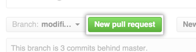
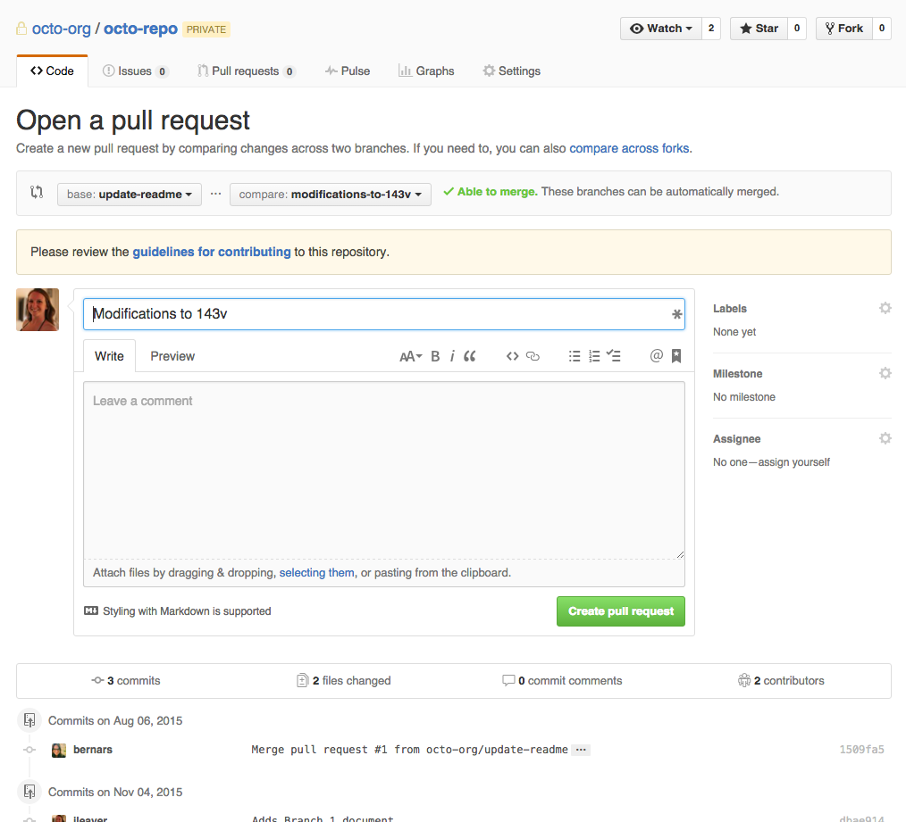

Si estas en este grupo sos lo mas.
Existen dos branches permanentes:
master: es el branch de producción que contiene el último release. No se agregarán cambios a él sino hasta el final del sprint.
development: es el branch en donde todos los cambios serán agregados durante el sprint.
Por cada tarea se deberá crear un branch, cuyo nombre tendrá el siguiente formato: issue-numero-funcionalidad. Esto permitirá que cada desarrollador pueda trabajar en forma independiente sin afectar el trabajo de los demás, además se reducirá el riesgo de integrar bugs y errores a development.
En el caso de que exista una relación de dependencia entre tareas, se deberá hacer un branch para la tarea dependiente a partir del branch independiente.
Una vez que se haya terminado un feature y este haya pasado el testeo se podrá realizar el merge con development. Estos branches serán eliminados al final del sprint, para evitar la pérdida del historial en el caso de que se encuentren bugs que obliguen la reapertura de la tarea.
El último día del sprint se integrarán los cambios realizados en development al master (una vez que hayan pasado todos los tests) y se eliminarán los branches secundarios.
Habrá una persona por proyecto encargada de hacer los builds así como también será la única persona autorizada a hacer push a los branches master y development.
Los demás developers solo harán push a sus respectivos branches y cuando la tarea/issue/fix esté terminada en el branch harán un Pull request del branch correspondiente a development. Esto es básicamente solo un aviso para el que mantiene el master y development que hay cambios listos para hacer merge.
El que mantiene descarga los cambios, hará un merge localmente y probará que todo esté bien, de ser así hará push a development.
Los desarrolladores periódicamente deben hacer merge del branch development al branch en el que está trabajando para tener los últimos cambios integrados a development.
Para saber en que branch estas:
git branch
Para cambiarse a un branch:
git checkout nombre_del_branch
Para actualizar branch (deben estar en el branch):
git pull
Para subir cambios al branch (sube solo al branch en el que estan):
git push
Para crear un nuevo branch:
git checkout -b nombre_del_nuevo_branch
A veces tenemos cambios locales y queremos hacer pull pero no se puede porque pueden haber conflictos. Para no revertir estos cambios locales necesarios (ej.: credenciales en el database.yml) se puede usar el siguiente comando antes de hacer pull:
git stash
Esto lo que hace es de alguna forma "esconder" los cambios locales que tenes. Luego haces el pull y para volver a ver los cambios que tenias antes haces:
git stash apply
Supongamos que van a continuar trabajando en un tarea y necesitan incluir los cambios agregados al branch development. Deben de hacer un merge de development a su branch en el que estan trabajando.
Primero se van a development y hacen pull:
git checkout development
git pull
Luego vuelven a su branch:
git checkout nombre_del_branch
Hacen el merge de development (incluir los cambios de development al actual branch):
git merge development
Su branch ya debe estar actualizado con los ultimos cambios de development. Puede haber un paso extra si hay conflictos explicados en la siguiente seccion.
Dependiendo de los cambios incluidos a veces git automaticamente crea un commit que contiene estos cambios. Asi que podes ver un commit que diga algo asi como: "Merge branch development into nombre_del_branch".
Al hacer pull o merge podemos tener conflictos. En consola van a ver un mensaje indicando que no termino la operacion por ese motivo. Para ver las lista de archivos que tienen conflicto:
git status
Luego editan los archivos solucionando los conflictos, guardan y hacen "git add archivo". Luego de solucionar conflictos de todos los archivos correspondientes:
git commit
Y git va a crear un commit especificando estos conflictos y ya esta todo listo para trabajar.
Primero hacen push de sus cambios a su branch. Para crear un pull request se van al repositorio en github y en la seccion de Code seleccionan su branch y hacen click en el boton "New pull request"
Luego le va a aparecer un formulario como el siguiente:
En la parte donde dice: "base:update-readme" tienen que seleccionar el branch development. Pueden colocar un titulo para el pull request y luego hacen click en el boton "Create pull request"
Pendiente...
Para el layout general usamos la estructura de la plantilla AdminLTE
Esta es una plantilla basada en bootsrap. Solo le da un estilo diferente a los estilos de bootstrap y ademas incorpora algunos componentes mas como el .box. Al hacer la vista de cada contenido usan esa estructura(pueden ver el ABM de proveedores como referencia):
section.content-header
h1 Compras (TITULO_DE_SECCION_PRINCIPAL)
section.content
.row
.col-xs-12
.box
.box-header
h3.box-title Listado de Proveedores (TITULO_DE_SUBSECCION)
.box-tools.pull-right (BOTONES_DE_ACCIONES_PRINCIPALES)
= link_to 'Nuevo proveedor', new_proveedor_path, class: 'btn btn-primary', remote: true
.box-body#proveedores-lista (CONTENIDO)
= render partial: 'proveedores/list', locals: {proveedores: @proveedores}
En el repositorio esta la plantilla completa con su documentacion donde pueden ver como usar los componentes. En la carpeta /docs/AdminLTE/index.html
Usamos la gema simple_form para hacer los formularios. Es bastante simple y configurable. Ya esta configurado para que use el html de bootstrap por defecto.
Para los mensajes principales a mostrar en la aplicacion (los que estan en la variable :flash) se pondran al comenzar el .content-wrapper.
Para mostrar mensajes que vienen por ajax se usará la libreria js noty. Se usa de la siguiente forma:
<script>
noty({type: "error", text : "Mensaje de error"});
</script>
Para las validaciones del lado del cliente se usará la libreria js jquery.Validation
Para usar los locales usados del lado del servidor del lado del cliente usamos la gema i18n-js. En javascript se usa de la siguiente forma:
<script>
I18n.t("some.scoped.translation");
</script>